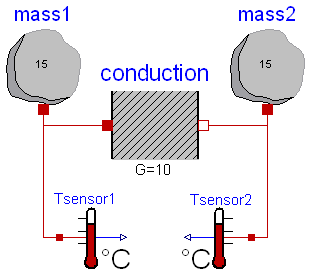
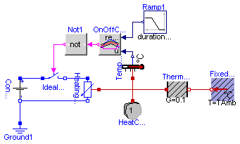
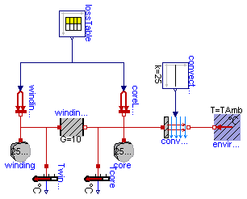

| Name | Description |
|---|---|
| Simple conduction demo | |
| Control temperature of a resistor | |
| Second order thermal model of a motor |
 Modelica.Thermal.HeatTransfer.Examples.TwoMasses
Modelica.Thermal.HeatTransfer.Examples.TwoMasses
This example demonstrates the thermal response of two masses connected by a conducting element. The two masses have the same heat capacity but different initial temperatures (T1=100 [degC], T2= 0 [degC]). The mass with the higher temperature will cool off while the mass with the lower temperature heats up. They will each asymptotically approach the calculated temperature T_final_K (T_final_degC) that results from dividing the total initial energy in the system by the sum of the heat capacities of each element.
Simulate for 5 s and plot the variables
mass1.T, mass2.T, T_final_K or
Tsensor1.T, Tsensor2.T, T_final_degC
| Type | Name | Default | Description |
|---|---|---|---|
| Temperature | T_final_K | Projected final temperature [K] | |
| Temperature_degC | T_final_degC | Projected final temperature [degC] |
model TwoMasses "Simple conduction demo"
extends Modelica.Icons.Example;
parameter SI.Temperature T_final_K(fixed=false) "Projected final temperature";
parameter NonSI.Temperature_degC T_final_degC(fixed=false)
"Projected final temperature";
HeatTransfer.HeatCapacitor mass1(C=15, T(start=from_degC(100)));
HeatTransfer.HeatCapacitor mass2(C=15, T(start=from_degC(0)));
HeatTransfer.ThermalConductor conduction(G=10);
HeatTransfer.Celsius.TemperatureSensor Tsensor1;
HeatTransfer.Celsius.TemperatureSensor Tsensor2;
equation
connect(mass1.port, conduction.port_a);
connect(conduction.port_b, mass2.port);
connect(mass1.port, Tsensor1.port);
connect(mass2.port, Tsensor2.port);
initial equation
T_final_K = (mass1.port.T*mass1.C + mass2.port.T*mass2.C)/(mass1.C +
mass2.C);
T_final_degC = to_degC(T_final_K);
end TwoMasses;
Modelica.Thermal.HeatTransfer.Examples.ControlledTemperature
A constant voltage of 10 V is applied to a temperature dependent resistor of 10*(1+(T-20C)/(235+20C)) Ohms, whose losses v**2/r are dissipated via a thermal conductance of 0.1 W/K to ambient temperature 20 degree C. The resistor is assumed to have a thermal capacity of 1 J/K, having ambient temparature at the beginning of the experiment. The temperature of this heating resistor is held by an OnOff-controller at reference temperature within a given bandwith +/- 1 K by switching on and off the voltage source. The reference temperature starts at 25 degree C and rises between t = 2 and 8 seconds linear to 50 degree C. An approppriate simulating time would be 10 seconds.
| Type | Name | Default | Description |
|---|---|---|---|
| Temperature_degC | TAmb | 20 | Ambient Temperature [degC] |
| Temperature_degC | TDif | 2 | Error in Temperature [degC] |
model ControlledTemperature "Control temperature of a resistor"
extends Modelica.Icons.Example;
parameter NonSI.Temperature_degC TAmb=20 "Ambient Temperature";
parameter NonSI.Temperature_degC TDif=2 "Error in Temperature";
output NonSI.Temperature_degC TRes = to_degC(HeatingResistor1.heatPort.T)
"Resulting Temperature";
Modelica.Electrical.Analog.Basic.Ground Ground1;
Modelica.Electrical.Analog.Sources.ConstantVoltage ConstantVoltage1(V=10);
HeatTransfer.HeatCapacitor HeatCapacitor1(C=1, T(start=from_degC(TAmb)));
Modelica.Electrical.Analog.Basic.HeatingResistor HeatingResistor1(
R_ref=10,
T_ref=from_degC(20),
alpha=1/(235 + 20));
HeatTransfer.Celsius.FixedTemperature FixedTemperature1(T=TAmb);
HeatTransfer.Celsius.TemperatureSensor TemperatureSensor1;
HeatTransfer.ThermalConductor ThermalConductor1(G=0.1);
Modelica.Electrical.Analog.Ideal.IdealOpeningSwitch IdealSwitch1;
Modelica.Blocks.Sources.Ramp Ramp1(
height=25,
duration=6,
offset=25,
startTime=2);
Modelica.Blocks.Logical.OnOffController OnOffController1(bandwidth=TDif);
Modelica.Blocks.Logical.Not Not1;
equation
connect(ConstantVoltage1.n, HeatingResistor1.n);
connect(ConstantVoltage1.n, Ground1.p);
connect(HeatingResistor1.heatPort, ThermalConductor1.port_a);
connect(ThermalConductor1.port_b, FixedTemperature1.port);
connect(HeatingResistor1.heatPort, TemperatureSensor1.port);
connect(HeatingResistor1.heatPort, HeatCapacitor1.port);
connect(ConstantVoltage1.p, IdealSwitch1.p);
connect(IdealSwitch1.n, HeatingResistor1.p);
connect(Ramp1.y, OnOffController1.reference);
connect(TemperatureSensor1.T, OnOffController1.u);
connect(OnOffController1.y, Not1.u);
connect(Not1.y, IdealSwitch1.control);
end ControlledTemperature;
Modelica.Thermal.HeatTransfer.Examples.Motor
This example contains a simple second order thermal model of a motor.
The periodic power losses are described by table "lossTable":
| time | winding losses | core losses |
| 0 | 100 | 500 |
| 360 | 100 | 500 |
| 360 | 1000 | 500 |
| 600 | 1000 | 500 |
The power dissipation to the environment is approximated by heat flow through
a thermal conductance between winding and core,
partially storage of the heat in the winding's heat capacity
as well as the core's heat capacity and finally by forced convection to the environment.
Since constant speed is assumed, the cinvective conductance keeps constant.
Using Modelica.Thermal.FluidHeatFlow it would be possible to model the coolant air flow, too
(instead of simple dissipation to a constant ambient's temperature).
Simulate for 7200 s; plot Twinding.T and Tcore.T.
| Type | Name | Default | Description |
|---|---|---|---|
| Temperature_degC | TAmb | 20 | Ambient temperature [degC] |
model Motor "Second order thermal model of a motor"
extends Modelica.Icons.Example;
parameter NonSI.Temperature_degC TAmb = 20 "Ambient temperature";
Modelica.Blocks.Sources.CombiTimeTable lossTable(extrapolation=Modelica.
Blocks.Types.Extrapolation.Periodic, table=[0,100,500; 360,100,500;
360,1000,500; 600,1000,500]);
HeatTransfer.PrescribedHeatFlow windingLosses(T_ref=from_degC(95), alpha=
3.03E-3);
HeatTransfer.HeatCapacitor winding(T(start=from_degC(TAmb)), C=2500);
HeatTransfer.Celsius.TemperatureSensor Twinding;
HeatTransfer.ThermalConductor winding2core(G=10);
HeatTransfer.PrescribedHeatFlow coreLosses;
HeatTransfer.HeatCapacitor core(T(start=from_degC(TAmb)), C=25000);
HeatTransfer.Celsius.TemperatureSensor Tcore;
Modelica.Blocks.Sources.Constant convectionConstant(k=25);
HeatTransfer.Convection convection;
HeatTransfer.Celsius.FixedTemperature environment(T=TAmb);
equation
connect(windingLosses.port, winding.port);
connect(coreLosses.port, core.port);
connect(winding.port, winding2core.port_a);
connect(winding2core.port_b, core.port);
connect(winding.port, Twinding.port);
connect(core.port, Tcore.port);
connect(winding2core.port_b, convection.solid);
connect(convection.fluid, environment.port);
connect(convectionConstant.y, convection.Gc);
connect(lossTable.y[1], windingLosses.Q_flow);
connect(lossTable.y[2], coreLosses.Q_flow);
end Motor;